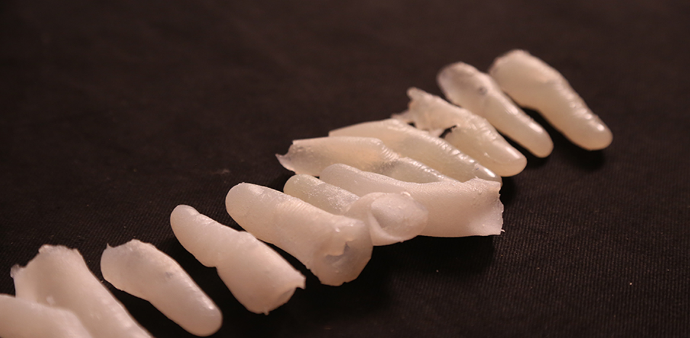

A performative commentary on Climate Migration, the loss of land and identity represented by the physical distance and distortion of the human body.
Environmental migrants are persons or groups of persons who, for compelling reasons of sudden or progressive changes in the environment that adversely affect their lives or living conditions, are obliged to leave their habitual homes, or choose to do so, either temporarily or permanently, and who move either within their country or abroad.
Since climate migrants are not internationally recognized as 'refugees', they may expreience what is called 'Statelessness' - the phenomenon of not having a state (for international migration, mostly in island countries), losing both their Land and Identity. I am using food as a metaphor to talk about this phenomenon.
In the performance, the finger sculptures get more disfigured with every meal the performer eats - representing a migrant's increasing dysmorphic distance from their land and food. The physical distortion of the human body is compelling and feels real to the observer.

These finger sculptures used in the performance belong to different migrants and are made using silicone casting in an alginate mould.
These finger sculptures used in the performance belong to different migrants and are made using silicone casting in an alginate mould.